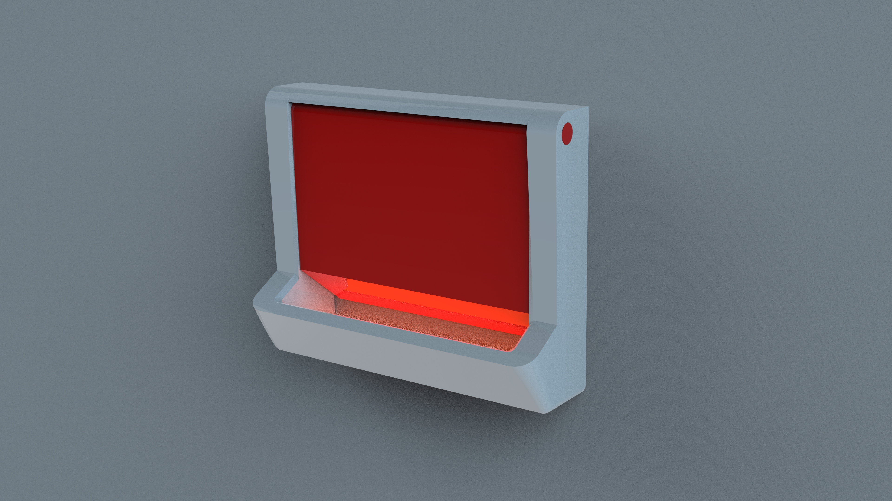
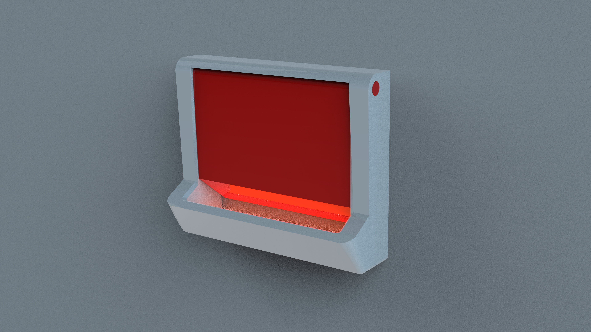

Hockey Skate Protection
A rather specific concept product that aids a researcher in inflating mouse lungs.
Done during the Vanderbilt(VI4) Art Residency, where artists/designers are paired with a researcher to define and create works. I figured creating a concept product would be fun, especially with a researcher, Kristy Chiang, in contact.Time |
6+ weeks |
Role |
ID, UX Research, Human Factors + Ergonomics |
Tools |
SolidWorks, Keyshot |
 

A look into her current model.
Kristy’s current set up was on a Styrofoam base because the apparatus had to be pinned down. Additionally, her hand positioning for inflation is uncomfortable + unstable.